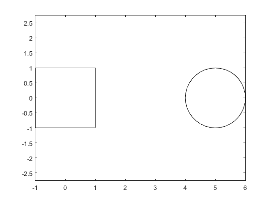
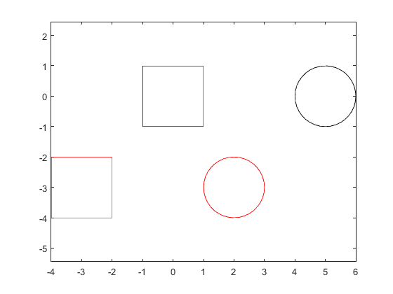
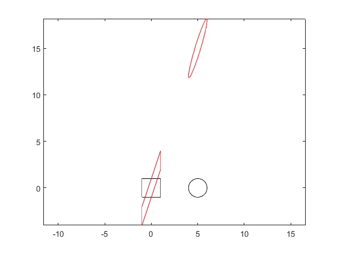
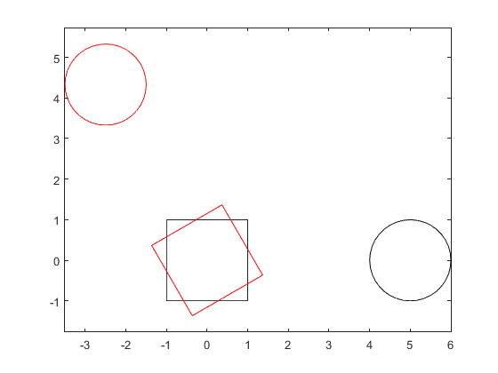
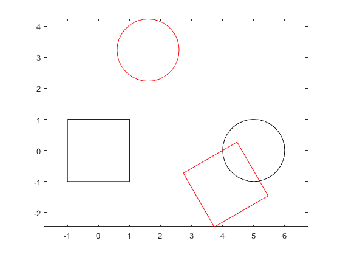
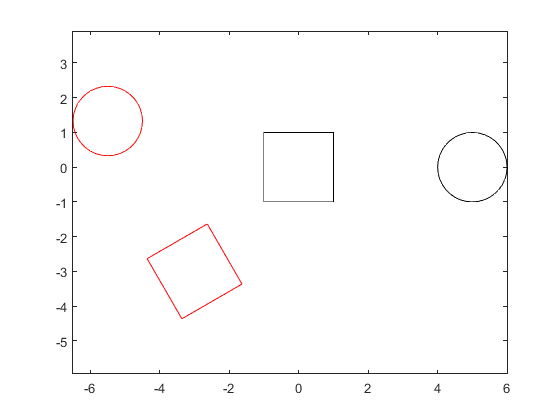

Contents
Original Shapes
points on the square; the first point is repeated to close the square when it is plotted
Psquare = [1 -1 -1 1 1;
1 1 -1 -1 1];
% points on the circle generated using a vector angles
% most functions in Matlab are vectorized (i.e., they will work
% for array inputs)
ang = 0:10:360;
Pcircle = [cosd(ang) + 5;
sind(ang)];
plot(Psquare(1, :), Psquare(2, :), 'k');
hold on
plot(Pcircle(1, :), Pcircle(2, :), 'k');
axis equal
 Translation
translation vector
t = [-3; -3]; % translated square Qsquare = translate2(Psquare, t); % translated circle Qcircle = translate2(Pcircle, t); plot(Qsquare(1, :), Qsquare(2, :), 'r'); plot(Qcircle(1, :), Qcircle(2, :), 'r'); axis equal
Vertical Shear
%shear amount m = 3; %sheared square Ssquare = vshear2(Psquare, m); %sheared circle Scircle = vshear2(Pcircle, m); %create new figure figure; %plot shapes plot(Psquare(1, :), Psquare(2, :), 'k'); hold on plot(Pcircle(1, :), Pcircle(2, :), 'k'); axis equal plot(Ssquare(1, :), Ssquare(2, :), 'r'); plot(Scircle(1, :), Scircle(2, :), 'r'); axis equal
Rotation
%angle of rotation theta = 120; %rotated square Rsquare = rotate2(Psquare, theta); %rotated circle Rcircle = rotate2(Pcircle, theta); %create new figure figure; %plot shapes plot(Psquare(1, :), Psquare(2, :), 'k'); hold on plot(Pcircle(1, :), Pcircle(2, :), 'k'); axis equal plot(Rsquare(1, :), Rsquare(2, :), 'r'); plot(Rcircle(1, :), Rcircle(2, :), 'r'); axis equal
Translation Followed by Rotation
%angle of rotation theta = 120; %translation vector t = [-3; -3]; %transformation on square Bsquare = translate2(Psquare, t); Csquare = rotate2(Bsquare, theta); %transformation on circle Bcircle = translate2(Pcircle, t); Ccircle = rotate2(Bcircle, theta); %create new figure figure; %plot shapes plot(Psquare(1, :), Psquare(2, :), 'k'); hold on plot(Pcircle(1, :), Pcircle(2, :), 'k'); axis equal plot(Csquare(1, :), Csquare(2, :), 'r'); plot(Ccircle(1, :), Ccircle(2, :), 'r'); axis equal
Rotation Followed by Translation
%angle of rotation theta = 120; %translation vector t = [-3; -3]; %transformation on square Fsquare = rotate2(Psquare, theta); Gsquare = translate2(Fsquare, t); %transformation on circle Fcircle = rotate2(Pcircle, theta); Gcircle = translate2(Fcircle, t); %create new figure figure; %plot shapes plot(Psquare(1, :), Psquare(2, :), 'k'); hold on plot(Pcircle(1, :), Pcircle(2, :), 'k'); axis equal plot(Gsquare(1, :), Gsquare(2, :), 'r'); plot(Gcircle(1, :), Gcircle(2, :), 'r'); axis equal